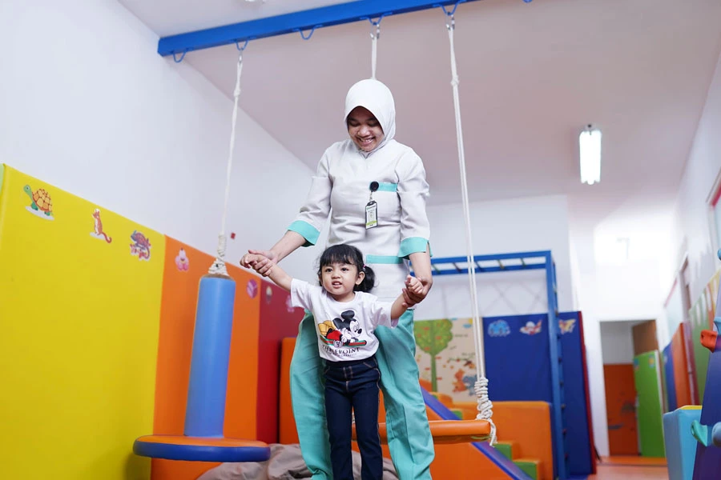
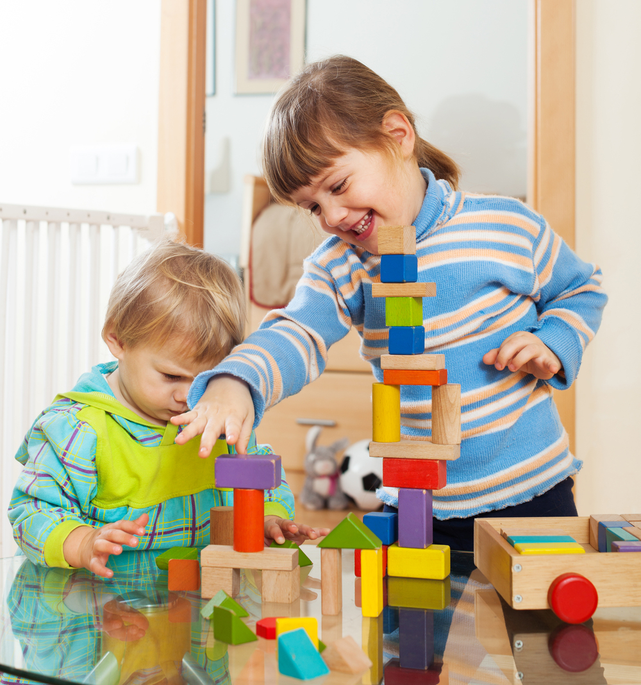
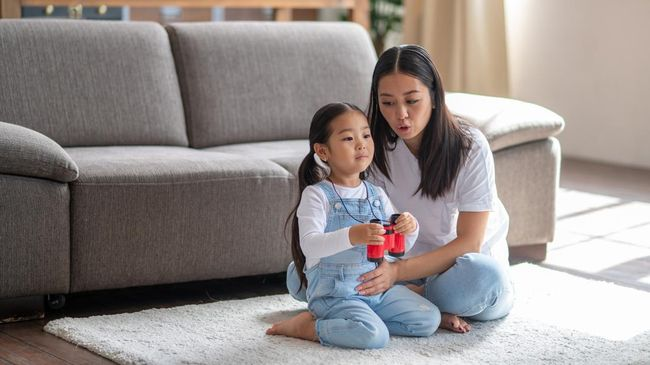
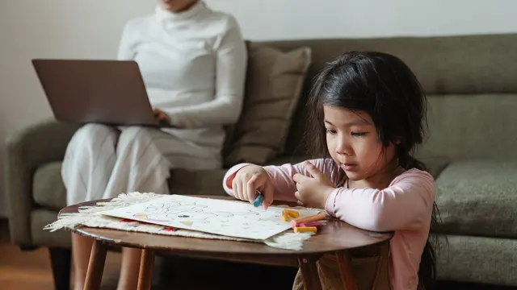

Mengulik Tahapan Perkembangan Emosi Anak Usia 6-9 Tahun
Riset: 4 Support System Kunci bagi Ibu dalam Mendukung Tumbuh Kembang Anak
Mengenal Tahapan Tumbuh Kembang Anak Usia 1 hingga 5 Tahun
Mengenal Tahapan Perkembangan Anak Anda Sesuai Umurnya

Tahapan Tumbuh Kembang Anak Yang Perlu Dicermati
Kenali Tumbuh Kembang Anak Usia Dini Yang Ideal

Tumbuh Kembang Anak Balita
5 Cara Mengatasi Parental Burnout Bagi Ibu yang Bekerja
Mengenal Digital Parenting, Cara Mendidik Anak di Era Digital dengan Cerdas
Inilah 5 Tips Mendidik Anak di Era Digital yang Tepat
Mengenal Digital Parenting, Pola Asuh di Era Digital agar Anak Menjadi Generasi Emas

10 Tips Parenting Anak dan Hal yang Perlu Dihindari

5 Kesalahan Orangtua dalam Mendidik Anak yang Sering Diabaikan
1.000 Hari Pertama Kehidupan Dalam Tumbuh Kembang Anak
Ingin Mendidik Anak Tumbuh Mandiri dan Disiplin? 3 Tips Parenting ala Jepang Ini Patut Dicontoh!
15 Resep Masakan untuk Balita yang Praktis dan Penuh Gizi
4 Rekomendasi Menu Makanan Sehat dan Lezat Untuk Anak GTM